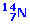
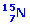

Calcula la
energía de enlace del núcleo
y su energía de enlace por nucleón.
Masas atómicas en u n: 1.008665, p:
1.007277, N-14: 13.99922 |
La energía de enlace del
es 289 MeV. Calcula su masa en unidades de masa atómica (u).
Masas atómicas en u n: 1.008665, p:
1.007277 |
Las masas de los isótopos y
son
7.016930 y 9.012183 u.
Determina cuál de los dos es más estable. Masas atómicas
en u n: 1.008665, p: 1.007277 |
Dada la reacción nuclear:
a) Comprueba que no se cumple
la conservación de la masa
b) Determina la energía
que desprende la reacción y la energía producida por mol
de Li-7
Masas atómicas en u Li-7:
7.01433, H-1: 1.00728, He-4: 4.00151 |
El núcleo P-32 se desintegra emitiendo
un electrón:
, determinar los valores de A y Z del núcleo hijo. Si la masa atómica
del P-32 es 31.973908 u y la energía cinética del electrón
es de 1.71 MeV, calcular la masa del núcleo X |
Durante el proceso de fisión de
un núcleo
por un neutrón se liberan 200 MeV.
Calcular la energía liberada, en kwh, al fisionarse completamente
1 kg de uranio |
El Sol emite cada minuto una cantidad de
energía igual a 2.34·1028 J. Hallar cuánto
tiempo tardará la masa del Sol en reducirse a la mitad, suponiendo
que la radiación permanece constante.
Masa del Sol: 1.97·1030 kg |
a)
Calcula la masa de deuterio que requeriría por día una hipotética
central de fusión de 500 MW de potencia donde la energía
se obtuviese del proceso
b) ¿Qué masa sería
necesaria si el rendimiento fuera del 30%?
Masas atómicas Deuterio:
2.01474 u, He-4: 4.00387 u |
Demostrar que si un cuerpo emite energía
E en forma de radiación, la masa disminuye en E/c2
¿Con qué rapidez debe convertirse masa en energía
para producir 20 MW? |
El
es un isótopo radioactivo del carbono utilizado para determinar
la antigüedad de objetos. Calcula la energía de ligadura media
por nucleón, en MeV, de un núcleo de
Masas atómicas en u n: 1.0087, p: 1.0073, C-14: 14.0032 |
Las masas atómicas del
 y
del  son
13.99922 u y 15.000109 u respectivamente.
Determina la energía de enlace de ambos en eV ¿Cuál
es el más estable?
Masas atómicas en u n:
1.008665, p: 1.007276
|
¿Cuál es el valor
de la energía, expresada en eV, que se libera en la siguiente reacción
de fusión?
Masas atómicas en u: H-3:
3.016049, He-4: 4.002603, n: 1.008665 |